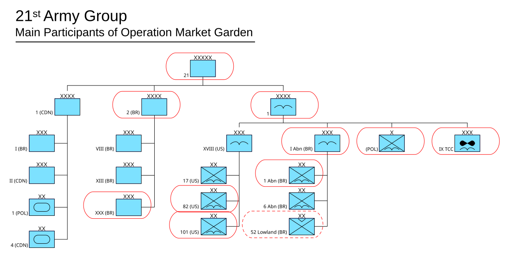

Operación Market Garden
El ambicioso plan aliado para tomar por sorpresa una serie de puentes en los Países Bajos y cruzar el Rin, que terminó en un costoso fracaso en Arnhem: "un puente demasiado lejos".
Datos
| Fechas | 17 – 25 de septiembre de 1944 |
|---|---|
| Lugar | Países Bajos (Eindhoven, Nimega y Arnhem) |
| Resultado | Victoria alemana; fracaso aliado en tomar el puente de Arnhem |
| Bando aliado | Reino Unido, Estados Unidos y Polonia |
| Bando alemán | Alemania |
| Comandantes | Bernard Montgomery, Frederick Browning, Roy Urquhart (Aliados); Walter Model, Wilhelm Bittrich (Alemania) |
| Clave | La mayor operación aerotransportada de la historia hasta ese momento |
Bando aliado
Brigada paracaidista
Bando alemán
Introducción
Tras la ruptura de Normandía y el rápido avance por Francia y Bélgica, el mariscal Montgomery propuso un golpe audaz para terminar la guerra antes de Navidad: lanzar tropas aerotransportadas para tomar una cadena de puentes en los Países Bajos ("Market") mientras una columna blindada avanzaba por tierra para enlazar con ellas ("Garden"). El último puente, sobre el Rin en Arnhem, era la llave para invadir Alemania por el norte.
Razones
- Terminar la guerra en 1944: se creía que un golpe rápido a través del Rin podía precipitar el colapso alemán.
- Rodear la Línea Sigfrido: entrar en Alemania por los Países Bajos evitaba las fortificaciones de la frontera occidental.
- Aprovechar la superioridad aérea: los aliados contaban con una enorme flota de transporte y planeadores.
Cuerpo (desarrollo)
Las divisiones aerotransportadas estadounidenses tomaron con éxito los puentes de Eindhoven y, tras duros combates, Nimega. Pero en Arnhem, la 1.ª División Aerotransportada británica cayó sobre una zona donde, por sorpresa, se estaban reorganizando dos divisiones Panzer de las SS.
La columna terrestre del XXX Cuerpo avanzó por una única carretera elevada —apodada "Hell's Highway"— con retrasos constantes. No llegó a tiempo. Los paracaidistas británicos, aislados y sin refuerzos, resistieron heroicamente en el puente de Arnhem hasta agotar las municiones. Los supervivientes tuvieron que ser evacuados; la división quedó prácticamente destruida.

Mapa de la operación (Wikimedia Commons): el corredor de puentes desde Eindhoven hasta Arnhem. Leyenda original en inglés.
Conclusión
Market Garden fracasó en su objetivo principal: el puente de Arnhem no se pudo mantener y el Rin no fue cruzado. La esperanza de acabar la guerra en 1944 se desvaneció.
- La 1.ª División Aerotransportada británica quedó destruida como unidad.
- Los aliados liberaron parte del sur de los Países Bajos, pero el norte quedó ocupado y sufrió el "invierno del hambre".
- La guerra en el oeste se prolongó hasta 1945.
Curiosidades
- "Un puente demasiado lejos": la frase, atribuida al general Browning antes de la operación, dio título a un famoso libro y película sobre la batalla.
- Radios que fallaron: en Arnhem, muchas radios no funcionaron, dejando a las unidades incomunicadas en el momento crítico.
- Los paracaidistas polacos: la brigada polaca de Sosabowski fue lanzada tarde y en malas condiciones, y su comandante fue injustamente culpado del fracaso.
Teorías
Debates e interpretaciones historiográficas, presentados como tales:
- ¿Plan demasiado ambicioso? Se debate si la operación era inviable desde el diseño (depender de una sola carretera y de tomar todos los puentes intactos) o si podría haber funcionado con mejor ejecución.
- La inteligencia ignorada: se discute por qué se desoyeron los informes que advertían de la presencia de blindados alemanes cerca de Arnhem.